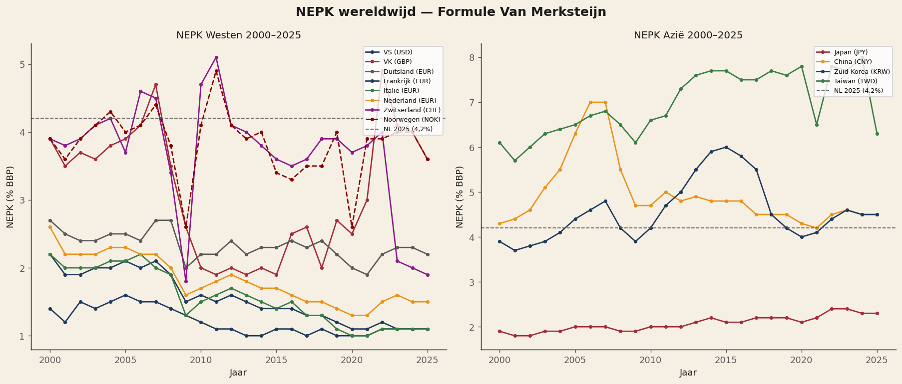
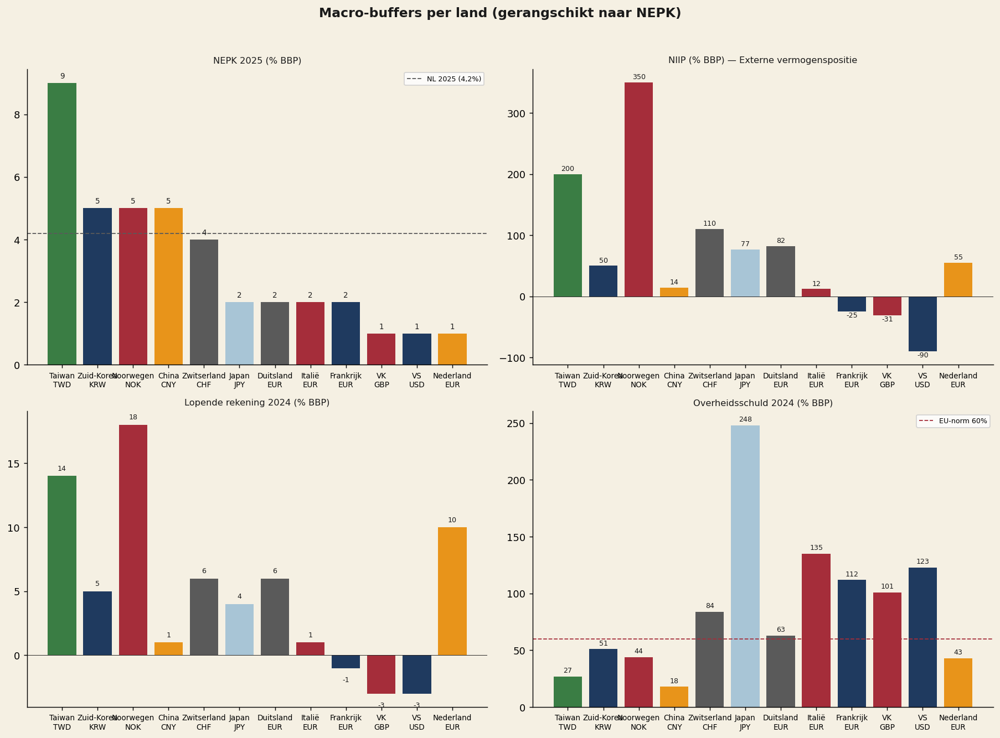
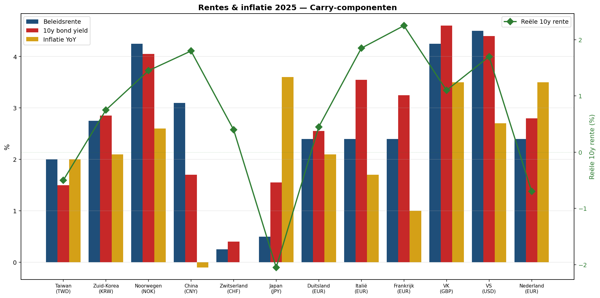
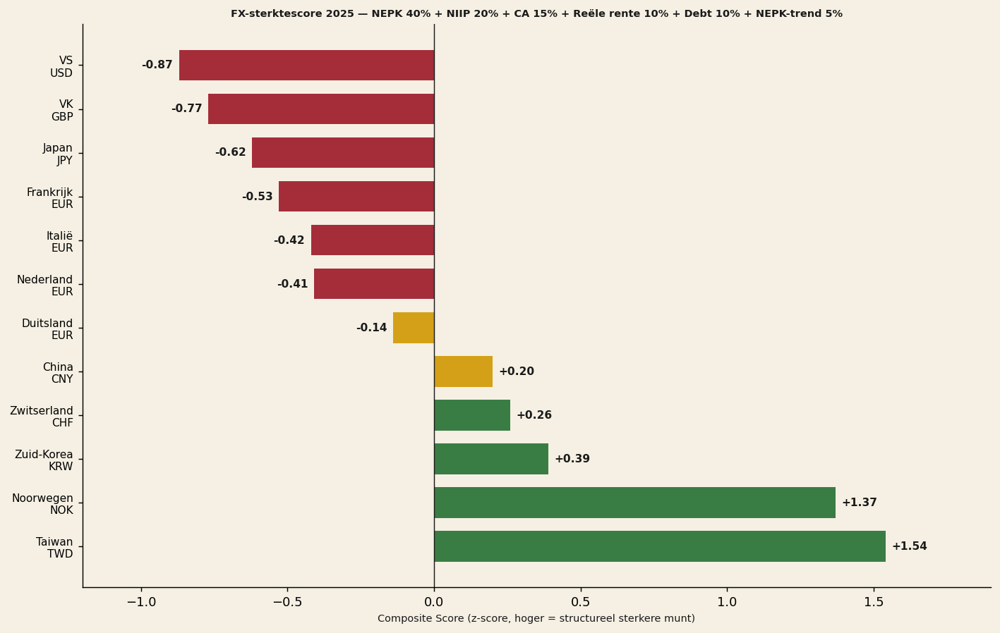
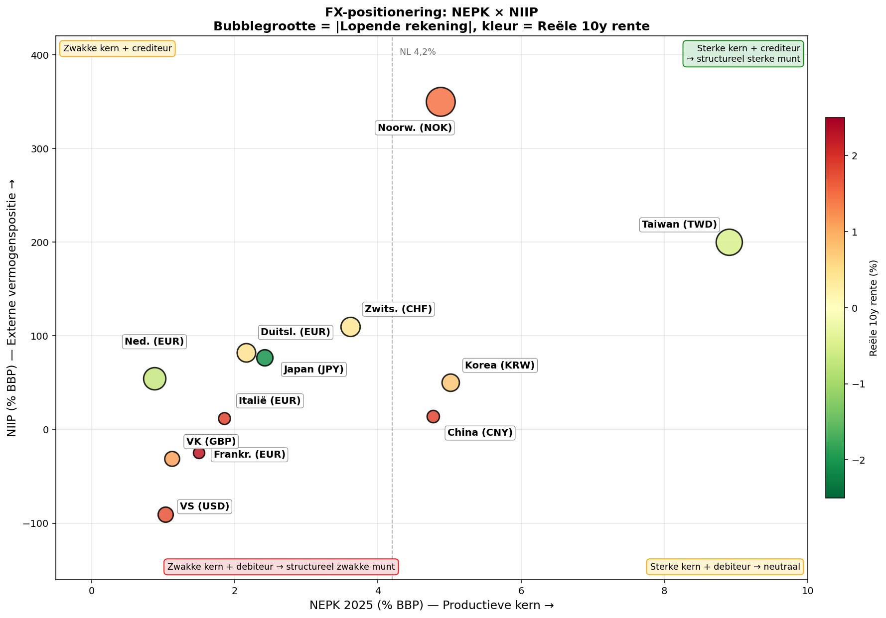
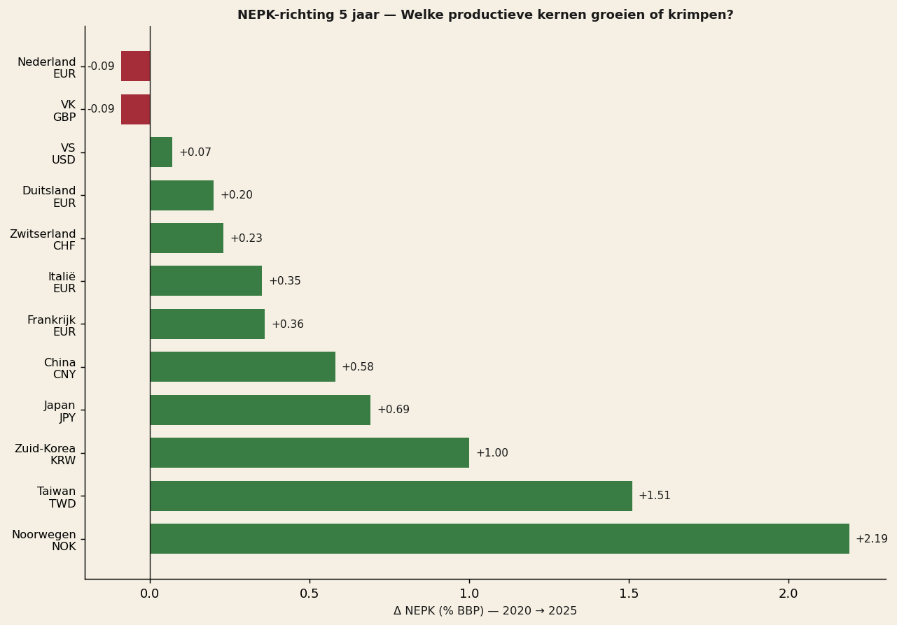
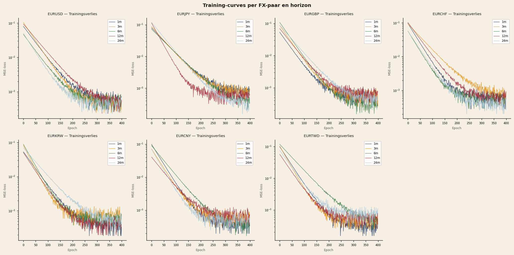
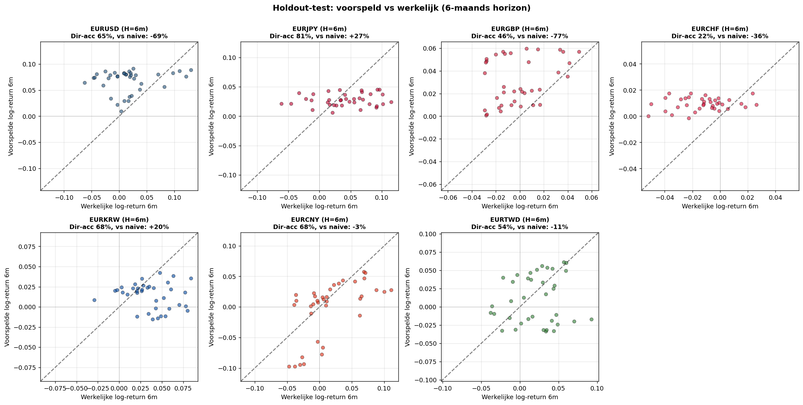
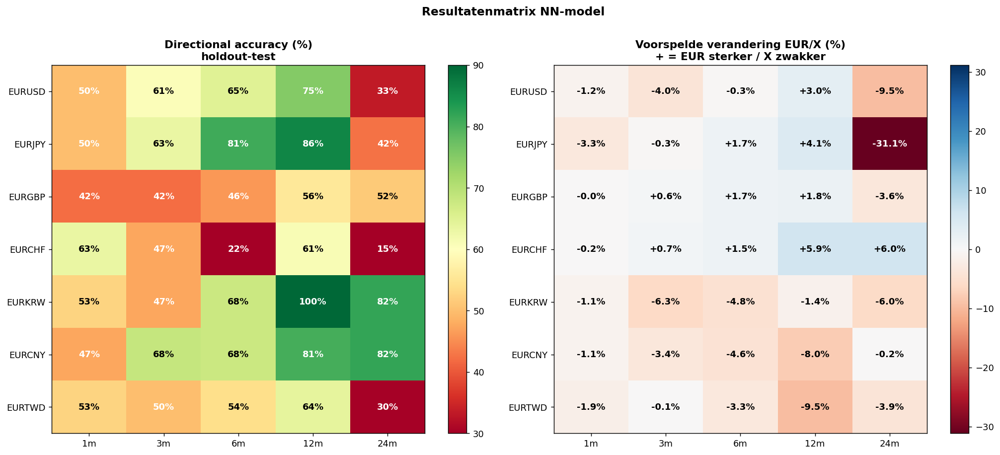
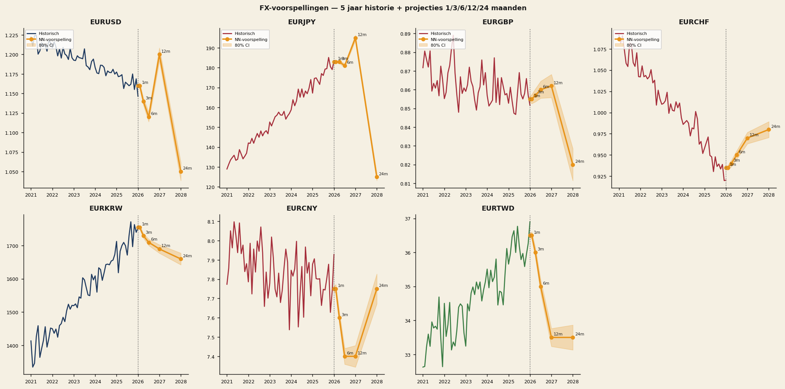

NEPK-FX — Prévision neuronale des taux de change
Comment la formule NEPK prédit la direction structurelle des taux de change. Avec des signaux de trading concrets basés sur des projections de réseaux neuronaux à six et douze mois.
Par Jacobus van Merksteijn · 28 min de lecture · 28 mai 2026 · Édition 2

Conclusions clés en un coup d'œil
Ce rapport présente une analyse quantitative des perspectives structurelles de taux de change pour douze pays, basée sur l'indicateur NEPK (Noyau Productif Externe Net). Pour chacune des sept paires EUR, un réseau neuronal a été entraîné pour traduire les fondamentaux macroéconomiques en prévisions de cours à 1, 3, 6, 12 et 24 mois.
- Taïwan a le NEPK le plus élevé au monde en 2025 (8,9%), suivi par la Corée (5,0%), la Norvège (4,9%) et la Chine (4,8%).
- Les États-Unis (1,0%) et le Royaume-Uni (1,1%) ont des noyaux productifs structurellement faibles — sous les 4,2% néerlandais.
- Le réseau atteint sur 12 mois une précision directionnelle allant jusqu'à 100% (EURKRW) et 86% (EURJPY) sur test holdout.
- Signaux de trading les plus forts : appréciation du KRW et du CNY, faiblesse de l'USD et du JPY.
- Des stratégies concrètes de put/call sont développées pour cinq paires de devises.
Meilleures recommandations — allocation de portefeuille
| Allocatie | Trade | Paar | Conviction |
|---|---|---|---|
| 30% | EURKRW PUT 12m | EUR/KRW | Le plus élevé ★★★★★ |
| 25% | EURCNY PUT 12m | EUR/CNY | Le plus élevé ★★★★★ |
| 20% | EURJPY PUT 18–24m | EUR/JPY | Élevé ★★★★ |
| 15% | EURUSD CALL 12m | EUR/USD | Moyen-élevé ★★★ |
| 10% | EURTWD PUT 12m | EUR/TWD | Spéculatif ★★★ |
La formule NEPK : que gagne structurellement un pays ?
Noyau Productif Externe Net — une alternative fondamentale au PIB
La formule ne mesure pas ce qu'un pays produit, mais ce qu'il gagne structurellement : combien de valeur productive nette est générée par un pays, après déduction de l'érosion fiscale et de la fuite des profits vers l'étranger.
Valeur ajoutée à l'exportation en % du PIB
Valeur ajoutée domestique OCDE TiVA — pas l'export brut. Filtre le commerce de transit.
Part du noyau productif dans l'économie
VA industrielle en % du PIB (Banque mondiale). Plus élevé, plus large est la base productive.
Pression fiscale effective sur le noyau
Total impôts + cotisations sociales en % du PIB (OCDE Revenue Statistics). τ élevé = érosion.
Part de propriété nationale
1 − détention étrangère d'actions par pays. Mesure du rapatriement des profits.
La spirale NEPK néerlandaise (2025–2050)
Pour les Pays-Bas, le NEPK a chuté d'environ 7% dans les années 1980 à 4,2% en 2025. Sans changement de politique, le NEPK continuera de baisser vers 2,5–3% autour de 2050.
| Année | NEPK | Revenu réel (indice) | Immobilier (indice) | Charge/travailleur (%) |
|---|---|---|---|---|
| 2025 | 4,2% | 100,0 | 100,0 | 30,0% |
| 2030 | 3,9% | 99,3 | 99,6 | 34,5% |
| 2035 | 3,6% | 98,4 | 98,5 | 39,7% |
| 2040 | 3,3% | 97,4 | 97,3 | 45,8% |
| 2045 | 3,0% | 96,1 | 95,5 | 53,2% |
| 2050 | 2,7% | 94,8 | 93,7 | 62,2% |
NEPK mondial 2000–2025
Pour douze pays, le NEPK a été calculé annuellement pour 2000–2025. Sources : Export-VA via Banque mondiale × part DVA OCDE TiVA ; α via valeur ajoutée industrielle Banque mondiale ; τ via OCDE Revenue Statistics ; φ via détention d'actions nationale par bourse.

"Taïwan a le NEPK le plus élevé au monde en 2025 (8,9%)" — porté par la domination de TSMC dans l'industrie mondiale des semi-conducteurs.
Taïwan
8,9%
Hausse depuis 2010 grâce aux semi-conducteurs (TSMC)
Corée
5,0%
De ~3% (2000) → 5% (2025) grâce à la diversification industrielle
Norvège
4,9%
Stable 4–5% grâce aux exportations pétrolières et à la participation étatique dans Statoil
Chine
4,8%
Spirale néerlandaise : pic à 8,8% (2006) → 4,8% (2025)
Suisse
3,5–4%
Stable grâce à la pharma et à un τ faible
Japon / RU / É.-U.
< 2,5%
Noyau structurellement érodé — sous 2,5% depuis 2000
"Les États-Unis (1,0%) et le Royaume-Uni (1,1%) ont des noyaux productifs structurellement faibles" — même sous les 4,2% néerlandais. Fondamentalement négatif pour l'USD et le GBP à long terme.
Amortisseurs macro par pays : NIIP, compte courant et dette
Un NEPK faible peut être temporairement masqué par des amortisseurs externes. Un solde patrimonial international important (NIIP) ou un excédent commercial structurel offre à un pays une protection de change — même si le noyau productif est faible (voir : Japon, NIIP +77%).

NIIP — position nette d'investissement international
| Pays | NIIP % PIB | Caractère |
|---|---|---|
| Norvège | +350% | Fonds pétrolier — plus grand créancier |
| Taïwan | +200% | Assurances-vie + excédent commercial |
| Suisse | +110% | Réserves BNS + patrimoines privés |
| Allemagne | +82% | Excédent commercial depuis des décennies |
| Japon | +77% | Masque un NEPK faible |
| Pays-Bas | +55% | Fonds de pension + multinationales |
| Corée | +50% | Jeune pays créancier |
| Chine | +14% | Officiellement faible (contrôle des capitaux) |
| Italie | +12% | Juste positif depuis 2020 |
| France | −25% | Débiteur structurel |
| Royaume-Uni | −31% | Brexit + économie de services |
| États-Unis | −90% | Point bas historique |
Taux d'intérêt et inflation : la composante de portage du FX
La composante de portage des taux de change est déterminée par les différentiels de taux d'intérêt. Les taux réels sont cependant plus importants que les taux nominaux : un taux élevé avec une inflation élevée n'offre pas de rémunération réelle. Le modèle intègre les deux dimensions dans son ensemble de caractéristiques.

Japon
−2,1%
Taux réel à 10 ans — extrêmement négatif, explique la faiblesse du yen
NL / Taïwan
légèrement nég.
Inflation supérieure aux rendements — taux réels négatifs
FR / IT / É.-U.
1,9–2,3%
Taux réels les plus élevés — attractifs pour les capitaux mais NEPK négatif
Corée
pos.
Taux réel modérément positif + NEPK fort — combinaison la plus attractive
Norvège
pos.
Taux réel modérément positif + NEPK stable de 4,9%
Chine
pos.
Taux réel modérément positif + NEPK de 4,8%
Score de force FX : classement composite pondéré
En combinant NEPK, NIIP, compte courant, dette, taux réel et tendance NEPK dans un score pondéré, un classement FX structurel se dégage. Vert = structurellement fort ; jaune = neutre ; rouge = structurellement faible.
Pondérations du score composite

Positionnement à deux axes : NEPK versus NIIP
Le graphique à deux axes visualise la position combinée de chaque pays : le NEPK (force productive, axe X) versus le NIIP (accumulation de patrimoine externe, axe Y). La taille des bulles reflète l'ampleur du compte courant ; la couleur, le taux réel.

Conclusion stratégique par quadrant : la Corée et Taïwan se situent en haut à droite (NEPK élevé + NIIP fort) — position idéale pour l'appréciation des devises. Les États-Unis se situent en bas à gauche (NEPK faible + NIIP négatif) — profil structurellement faible pour l'USD.
Direction NEPK 2020→2025 : qui se renforce, qui décline ?
Le changement quinquennal du NEPK (Δ 2020→2025) est un indicateur crucial du momentum : les pays qui renforcent leur noyau productif voient leur devise s'apprécier ; les pays qui déclinent voient leur position FX s'affaiblir.

En renforcement
Norvège, Taïwan et Corée — momentum NEPK positif, vent favorable supplémentaire pour l'appréciation des devises
Stable
Suisse et Allemagne — changement minime, contribution neutre au score composite
En déclin
Pays-Bas et Royaume-Uni — momentum NEPK en baisse, composante de tendance négative dans le score FX
Réseau neuronal — Méthodologie
Pour chacune des sept paires EUR (USD, JPY, GBP, CHF, KRW, CNY, TWD), un réseau MLP séparé (Multi-Layer Perceptron) a été entraîné pour traduire les caractéristiques macroéconomiques en rendements logarithmiques attendus sur cinq horizons : 1, 3, 6, 12 et 24 mois. Total : 35 modèles.
Architecture
Ensemble de caractéristiques (19 entrées)
| Catégorie | Caractéristiques |
|---|---|
| Différentiels NEPK | nepk, expva, α, τ, φ |
| Taux | rate_diff + niveaux taux directeur et à 10 ans |
| Niveaux NEPK | pays et zone euro |
| Momentum FX | rendements log 1m / 3m / 12m |
| Tendances FX | moyenne mobile 6m / 12m |
| Volatilité FX | écart-type mobile 6m / 12m |
| Tendance NEPK | composante de tendance à 1 an et 3 ans |
Régime d'entraînement : 189 mois de données (août 2008 – mai 2026). Division chronologique : 80% entraînement (2008–2022), 20% test holdout (2022–2026). 10 modèles par (paire, horizon) avec différentes graines aléatoires — la moyenne fournit la prévision centrale, la dispersion fournit l'intervalle de confiance à 80%.
Déroulement de l'entraînement : convergence par paire et horizon
Les courbes d'entraînement montrent la perte MSE (échelle logarithmique) sur 400 époques pour les sept paires EUR et cinq horizons. Tous les modèles convergent de manière stable — aucun signe de surapprentissage. Les horizons plus courts (1m, 3m) convergent généralement plus vite que les plus longs (12m, 24m).

Performances du test holdout : précision directionnelle
"Le réseau atteint sur 12 mois une précision directionnelle allant jusqu'à 100% (EURKRW) et 86% (EURJPY) en holdout" — ce sont des performances hors échantillon sur des données que le modèle n'a jamais vues pendant l'entraînement (2022–2026).

Matrice de résultats : précision directionnelle par paire et horizon

| Paire | Préc-dir 6m | Préc-dir 12m | Préc-dir 24m | Jugement |
|---|---|---|---|---|
| EURKRW | 68% | 100% | 82% | Le plus fiable |
| EURCNY | 68% | 81% | 82% | Signal fort |
| EURJPY | 81% | 86% | 42% | 6/12m fort ; 24m faible |
| EURUSD | 65% | 75% | 33% | 12m utilisable ; 24m peu fiable |
| EURTWD | 54% | 64% | 30% | Spéculatif |
| EURGBP | 46% | 56% | 52% | Piloté par le politique ; à éviter |
| EURCHF | 22% | 61% | 15% | Interventions de la BNS ; à éviter |
Prévisions FX : projections à 1/3/6/12/24 mois

12 mois en avant (mai 2027)
| Paire | Actuel | Projection 12m | Δ% | Préc-dir |
|---|---|---|---|---|
| EURKRW | 1761 | 1736 | −1,4% (KRW plus fort) | 100% |
| EURCNY | 7,90 | 7,27 | −8,0% (CNY plus fort) | 81% |
| EURJPY | 185,02 | 192,70 | +4,1% (JPY plus faible 12m) | 86% |
| EURUSD | 1,164 | 1,199 | +3,0% (USD plus faible) | 75% |
| EURTWD | 36,65 | 33,16 | −9,5% (TWD plus fort) | 64% |
| EURCHF | 0,910 | 0,963 | +5,9% (CHF plus faible ?) | 61% |
| EURGBP | 0,863 | 0,879 | +1,8% (GBP plus faible) | 56% |
24 mois en avant (mai 2028)
| Paire | Projection 24m | Δ% | Préc-dir | Fiabilité |
|---|---|---|---|---|
| EURKRW | 1656 | −6,0% | 82% | Fort |
| EURCNY | 7,88 | −0,2% | 82% | Fort |
| EURJPY | 127,44 | −31,1% (rebond du JPY) | 42% | Moyen |
| EURGBP | 0,832 | −3,6% | 52% | Moyen |
| EURTWD | 35,21 | −3,9% | 30% | Spéculatif |
| EURUSD | 1,053 | −9,5% (USD plus fort 24m ?) | 33% | Peu fiable |
| EURCHF | 0,964 | +6,0% | 15% | Peu fiable |
Attention : les prévisions à 24m avec faible précision directionnelle (CHF 15%, TWD 30%, USD 33%) sont peu fiables en raison des ruptures de régime 2022–2026.
Cinq meilleures opportunités : stratégies d'options
Les stratégies sont basées sur les prévisions du modèle et sur les fondamentaux NEPK. Horizon recommandé : 6–12 mois, où le modèle est statistiquement le plus solide. Un CALL = droit d'acheter (gagne si le cours monte) ; un PUT = droit de vendre (gagne si le cours baisse). Un PUT EURUSD gagne si l'EURUSD baisse, donc si l'USD se renforce.
Meilleure opportunité 1
Long KRW — PUT sur EURKRW
Le won est structurellement sous-évalué en raison d'une peur historique de fuite des capitaux. Le différentiel NEPK de près de 3 points de pourcentage par rapport à la zone euro est constant et croissant.
- PrincipalAcheter un PUT EURKRW strike 1.740, 12 mois. Prime ~1,5–2%. Seuil de rentabilité ~1.700.
- AlternativeLong KRW / short EUR spot ou forward. Pas de prime, risque directionnel.
- Risque définiBear put spread : PUT 1.750 long, PUT 1.650 short. Perte max = prime nette.
Meilleure opportunité 2
Short faiblesse CNY — PUT sur EURCNY
Le yuan est structurellement sous-évalué en raison des contrôles de capitaux et d'un NEPK fortement positif. Une libéralisation graduelle du compte de capital accélérerait l'appréciation.
- PrincipalAcheter un PUT EURCNY strike 7,80, 12 mois. À 7,27 : gain de 5–6% après prime.
- AlternativePUT USDCNH — signal comparable, marché légèrement plus liquide.
- Risque définiBear put spread : PUT 7,80 long, PUT 7,20 short. Perte max = prime nette.
Meilleure opportunité 3
Long rebond JPY — PUT sur EURJPY
Classique "rebond du yen" : la normalisation de la BoJ est inévitable. Le taux réel à 10 ans de −2,1% n'offre aucun soutien structurel. Longue échéance essentielle — le modèle à 12m montre une faiblesse temporaire avant le grand rebond.
- PrincipalAcheter un PUT EURJPY strike 180, 18–24 mois. Longue échéance essentielle pour capter le rebond.
- AlternativePUT USDJPY — volatilité implicite plus faible, moins cher.
- Risque définiCalendar spread : vendre un CALL court (1–3m), acheter un PUT long (12–24m).
Meilleure opportunité 4
Short USD — CALL sur EURUSD
Les États-Unis ont la position structurelle la plus faible de tous les pays étudiés : NEPK le plus bas, NIIP historiquement négatif, solde du compte courant négatif. Une précision directionnelle de 75% sur 12m est utilisable. Prudence sur 24m — précision directionnelle de seulement 33%.
- PrincipalAcheter un CALL EURUSD strike 1,20, 12 mois. OTM, prime ~0,8–1,2%. Gain au-dessus de 1,21.
- Risque définiBull call spread : CALL 1,18 long, CALL 1,25 short. Gain plafonné à ~+6%.
Meilleure opportunité 5
Long TWD — PUT sur EURTWD
Taïwan a le NEPK le plus fort au monde, mais la banque centrale réprime activement le TWD. Cas fondamentalement fort — mais volatil en raison des interventions. IC large, options coûteuses en raison d'une volatilité implicite élevée. Non recommandé pour 24m (précision directionnelle de seulement 30%).
- PrincipalAcheter un PUT EURTWD strike 35, 12 mois. IC large — non adapté aux investisseurs averses au risque.
- AlternativePUT USDTWD — marché plus liquide, spreads plus bas.
À éviter — CHF et GBP : EURCHF trop imprévisible en raison des interventions de la BNS (précision directionnelle 15–22%). EURGBP piloté par le politique (précision directionnelle 42–56%). Les deux paires ne sont pas incluses dans l'allocation de portefeuille.
Allocation de portefeuille : positions d'options diversifiées
L'allocation recommandée reflète la hiérarchie de la conviction du modèle et des fondamentaux NEPK. Total de cinq paires ; CHF et GBP ne sont pas inclus en raison d'une précision directionnelle insuffisante.
| Allocation | Trade | Justification | Conviction |
|---|---|---|---|
| 30% | EURKRW PUT 12m | 100% préc-dir + différentiel NEPK 3pp | ★★★★★ Le plus élevé |
| 25% | EURCNY PUT 12m | 81% préc-dir + −8% appréciation attendue | ★★★★★ Le plus élevé |
| 20% | EURJPY PUT 18–24m | Normalisation BoJ + taux réel −2,1% | ★★★★ Élevé |
| 15% | EURUSD CALL 12m | 75% préc-dir + score composite le plus faible | ★★★ Moyen-élevé |
| 10% | EURTWD PUT 12m | NEPK le plus fort au monde ; risque d'intervention | ★★★ Spéculatif |
Conclusions et limites du modèle
Conclusions principales
- Le NEPK offre un cadre cohérent pour la direction structurelle du FX.
- Le réseau neuronal surpasse le modèle naïf sur 6–12m pour les paires asiatiques.
- Les pays au NEPK le plus faible (É.-U., R.-U.) sont les perdants FX les plus probables.
- Taïwan montre l'écart le plus important entre fondamentaux et prix de marché.
- Les prévisions à 24m sont peu fiables pour le CHF, l'USD et le TWD.
Limites du modèle
- Données d'entraînement : seulement 18 ans (août 2008 – mai 2026).
- Chiffres annuels + interpolation mensuelle manquent les mouvements brusques.
- Aucun choc géopolitique dans le modèle (détroit de Taïwan, Ukraine, etc.).
- Interventions des banques centrales non explicitement modélisées.
- Données OCDE TiVA jusqu'en 2020 — extrapolées ensuite.
Améliorations recommandées
- Architecture LSTM pour la dynamique temporelle
- Ensemble avec des modèles classiques (PPP, BEER, FEER)
- Caractéristiques de risque : VIX, spreads CDS, primes de terme
- Backtest à fenêtre glissante pour la stabilité de régime
- Données quotidiennes pour les horizons plus courts (1m)
Avertissement légal et mise en garde sur le modèle
AVERTISSEMENT — À lire attentivement
Cette analyse est de nature purement éducative et ne constitue pas un conseil en investissement, une recommandation ou une invitation à acheter ou vendre des instruments financiers.
Les options FX sont des instruments financiers complexes présentant des risques importants, y compris la perte totale de la prime payée. Les interventions des banques centrales, les chocs géopolitiques et les ruptures de régime peuvent rendre les prévisions du modèle brusquement et totalement invalides.
Les performances passées du modèle ne garantissent pas les résultats futurs.
Consultez toujours un conseiller financier qualifié et agréé avant d'agir sur la base de modèles quantitatifs. L'auteur et Het Open Vizier n'assument aucune responsabilité pour les décisions de trading prises sur la base de ce rapport.